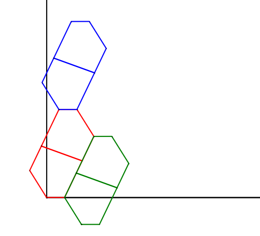
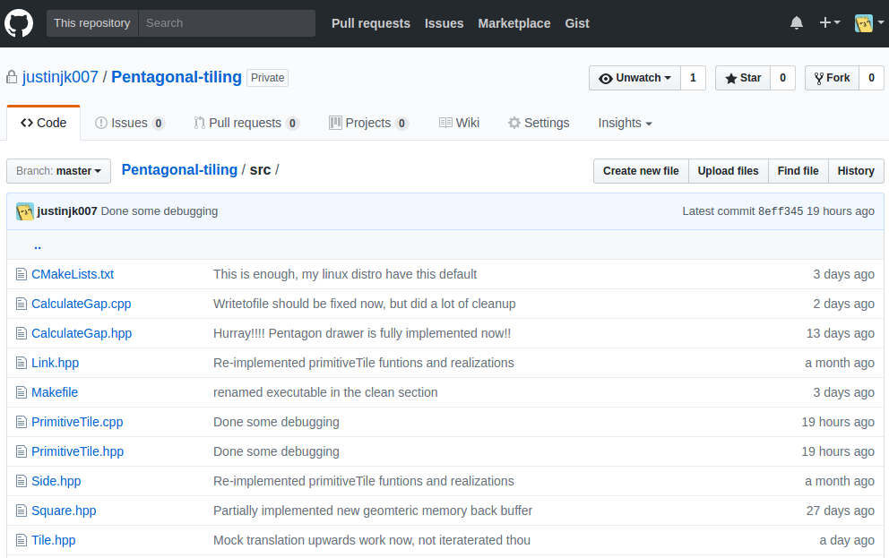

Pentagonal Tiling
By: Justin Kaipada
Created: 2017-06-27 Tue 09:30
What is pentagonal tiling ?

Tiling
- The aim here is to tile the given surface without leaving any gaps. Many geometrical shapes do so very easily.
- Example for this can be found all around us.
Squares and rectangles
Most common tiling used and found around us.

Triangles
All though not common, these can be also easily tiled.

- Equilateral triangles can be also tiled without any gaps
Hexagons
- Hexagons can also be tiled but not all of them. But many of them are easily tiled.
- Every Regular pentagons can be easily tiled

The problem with 5
- Unlike other geometrical shapes all pentagons cannot be tiled.
- Which means they leave behind gaps, not fully covering the surface they are tiling.

Some particular pentagons tile
- Until now there has been 15 different pentagons found that can tile without any gaps of area.
- Last one was found in 2015 by three mathematicians from University of Washington Bothell

I can quickly show a rundown of them
- Thanks to Jaap Scherphuis and his awesome applet.
My task was to write an algorithm that will determine this unwanted gap.
I/O
- The data given to me for each iteration is the lengths of the 5 sides of the pentagon and the corresponding angles.
- The data output should be the minimum gap between these tiles when tiled.
Design
Breakdown
- Our idea was to use my algorithm coupled with a evolutionary algorithm to find a new pentagon that could tile without leaving any gaps.
- Many challenges are ahead of us.
Algorithm
validate(Pentagon);
generateCo-ordinates(Pentagon);
createPrimitiveTile(Pentagon);
doTiling(primitiveTile);
return(minimumGap);
Challenges faced
Generating co-ordinates
- Creating co-ordinates for the pentagon was one of the challenge.
- Write now each side of the pentagon requires 4 iteration of the equation to find the co-ordinates.
- This doesn't slow the algorithm down because this is done only once when drawing the primitive tile and rest of the time this original pentagon is just translated.
This was least of the problems
- Combinations and permutations for everything else came after this.
Creating a primitive Tile
- Once we have the correct primitive tile we only have to translate
this
primitiveTileto tile the given surface. - This way we reduce the permutations significantly growing after
adding each tile to a regular tiling without the
primitiveTile.
Finding the right translation

Back to the permutations base
- Finding the correct primitive tile of size 2 takes
5 x 5= 25 tries - So increasing the size of the primitive tile means exponential growth in the number of combinations available.
- Combine this together with number of possible translations, combinations becomes even more bigger.
What we have come down to
- Let the size of primitive tile be two for now.
- And return the minimum gap for all the primitive tiles possible
Demo
Source Code Available : https://github.com/justinjk007/Pentagonal-tiling 
References
- http://paulbourke.net/texture_colour/tilingplane/
- http://jaapsch.net/tilings
- https://arxiv.org/abs/1510.01186
FINITO